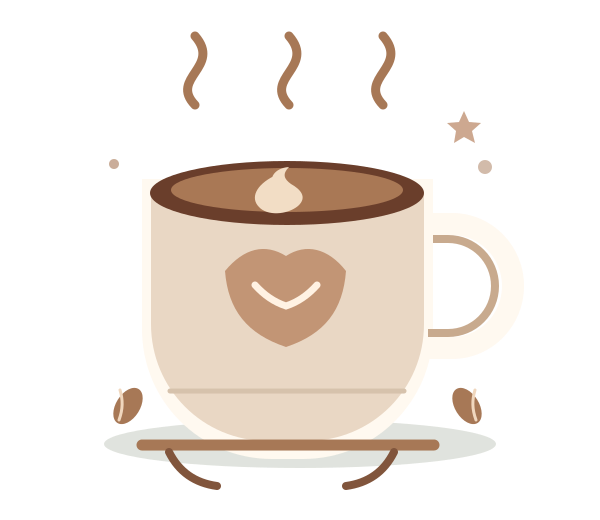

CLÁSSICO DA CASA
Espresso
Intenso, encorpado e extraído na hora. Aquele empurrãozinho entre um commit e outro.
R$ 6,00
ABERTO DURANTE O HACKATHON
Uma pausa gostosa para recarregar a energia, trocar ideias e voltar ao código com tudo.
Descubra o cardápioFeito na hora, servido com carinho.

CAFÉCafé especial
Feito na hora
Dentro do Hackathon
PAUSA PARA RECARREGAR
Seu próximo favorito está no cardápio.
CLÁSSICO DA CASA
Intenso, encorpado e extraído na hora. Aquele empurrãozinho entre um commit e outro.
R$ 6,00
QUERIDINHO ❤️
Espresso com leite vaporizado e uma espuma que merece até foto antes do primeiro gole.
R$ 10,00
PAUSA DOCE
Douradinho por fora, macio por dentro e cheio de gotas de chocolate.
R$ 8,00
GELADO & REFRESCANTE
Café extraído a frio por 12 horas, suave e perfeito para as maratonas de código.
R$ 12,00
Consulte a equipe sobre opções sem lactose e disponibilidade dos produtos.
SEU PONTO DE ENCONTRO
O Café do Código chegou ao Hackathon Vale Tech para deixar a maratona mais leve. Passe para tomar um café, respirar um pouquinho e compartilhar aquela ideia que pode mudar tudo.
Venha dar uma pausaA GENTE SE ENCONTRA POR LÁ
Centro de Inovação Vale Tech
São José dos Campos — SP
Durante todo o evento
20 a 22 de novembro de 2026
É só seguir o cheirinho de café ☕